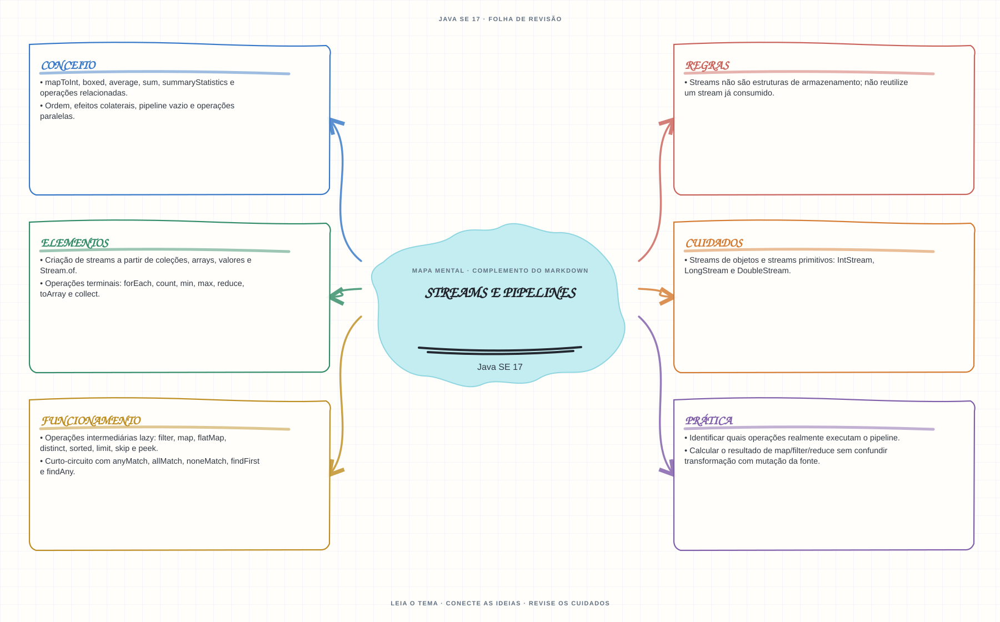

Ver mapa mental deste assuntoMontar pipelines sem confundir operações intermediárias lazy com operações terminais.
Primeiro contato: aprenda o conceito e pratique antes de consultar os detalhes de prova. Voltar aos fundamentos se algum termo ainda for novo.
- Leia o objetivo e localize a ideia principal no conteúdo abaixo.
- Preveja o resultado, compile e execute o exemplo.
- Faça a atividade sem copiar a solução e confira a checagem comentada.
EXEMPLO DE CONSOLE
Veja a regra em execução
Antes de executar, anote sua previsão. Compile o exemplo com o JDK e compare a saída observada com as regras deste assunto.
Comandos para compilar e executar
javac -d target/bin src/06-streams-e-lambdas/streams-e-pipelines/StreamsEPipelinesExample.java
java -cp target/bin StreamsEPipelinesExampleA execução imprime o resultado no console para você comparar com sua previsão.
Consultar código-fonte: StreamsEPipelinesExample.java
import java.util.List;
public class StreamsEPipelinesExample {
public static void main(String[] args) {
System.out.println("=== Streams: pipeline de operacoes ===");
List<String> linguagens = List.of("Java", "Kotlin", "Java", "C", "JavaScript");
List<String> resultado = linguagens.stream()
.filter(linguagem -> linguagem.length() > 1)
.distinct()
.sorted()
.toList();
int somaDosPares = List.of(1, 2, 3, 4, 5, 6).stream()
.filter(numero -> numero % 2 == 0)
.mapToInt(Integer::intValue)
.sum();
System.out.println("Fonte original (nao e alterada pelo stream): " + linguagens);
System.out.println("filter + distinct + sorted + toList: " + resultado);
System.out.println("Stream.toList() devolve uma lista nao modificavel.");
System.out.println("Pipeline primitivo filter + mapToInt + sum: " + somaDosPares);
}
}
PRATIQUE AGORA
Faça uma pequena alteração por conta própria
Filtre uma lista de números pares, transforme-os em seus quadrados e imprima o resultado após uma operação terminal.
Concluído quando: o programa compilar, produzir o resultado esperado e você conseguir explicar a regra aplicada.
CHECAGEM RÁPIDA · Streams e pipelines
Um filter executa o pipeline assim que é chamado?
Conferir resposta comentada
Não. filter é intermediária e lazy; uma operação terminal dispara a avaliação. Um stream já consumido não pode ser reutilizado.
Estude
- Criação de streams a partir de coleções, arrays, valores e
Stream.of. - Operações intermediárias lazy:
filter,map,flatMap,distinct,sorted,limit,skipepeek. - Operações terminais:
forEach,count,min,max,reduce,toArrayecollect. - Streams de objetos e streams primitivos:
IntStream,LongStreameDoubleStream. mapToInt,boxed,average,sum,summaryStatisticse operações relacionadas.- Curto-circuito com
anyMatch,allMatch,noneMatch,findFirstefindAny. - Streams não são estruturas de armazenamento; não reutilize um stream já consumido.
- Ordem, efeitos colaterais, pipeline vazio e operações paralelas.
Verifique se consegue
- Identificar quais operações realmente executam o pipeline.
- Calcular o resultado de
map/filter/reducesem confundir transformação com mutação da fonte.
Como este capítulo se relaciona com cada exame
Lambdas e streams surgem no Java 8; confirme se pertencem ao exame-alvo.
Base de estudo deste portal; confirme o mapeamento com o blueprint vigente.
Conceitos úteis; valide as APIs e o escopo atualizado de Java 21.
Orientação editorial sobre reaproveitamento do material; não representa objetivos oficiais nem garante cobertura do exame. Consulte o comparativo e as fontes da Oracle.